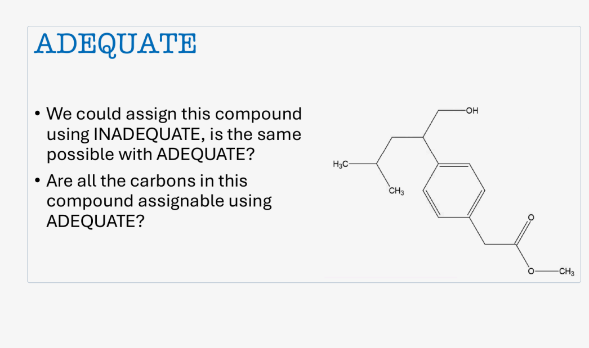

一句话目标：给定幻灯片上的一个对位取代苯衍生物，判定 能否像 那样把每一个碳都归属出来；如果不能，指出是哪些碳、为什么，以及要用什么实验补。
不能仅用 ADEQUATE 完成全部碳归属：有 2 个碳（C13、C15）不会出现在 ADEQUATE 的 ¹³C 维， 另有 4 个环碳因对称性化学等价、无法彼此区分。
左侧选择"看哪个片段"和"做哪种实验"，中间是重绘的分子骨架与 ¹³C 信号示意， 右侧给出当前对象的碳数、质子化情况与判定依据。 分子图中实线加粗表示该 C–C 键在当前实验下能给出交叉峰，红色虚线表示不能； 碳原子的圆环颜色表示它是否出现在 ¹³C 维。
示意图（本页按原图连接关系重绘，非原图像素描摹）。原图中的英文标注已保留其含义， 另见下方"原图核对"。碳环颜色：绿 = 在所选实验的 ¹³C 维出现；红虚线 = 不出现。
横条长度 = 该碳最强 C–C 键的转移效率 演示模型； δC 数值为文献典型值，仅示意峰位。
下面左栏是未经任何修改的原始截图。点击图上任意位置可把该点移到视野中央， 用滑块调整放大倍数，或使用预设区域按钮。右栏是三个可展开的放大区域，用于逐项核对文字与结构。
原图尺寸 1046 × 619 像素。图片以数据内嵌方式保留，缩放只改变显示窗口，不修改原图本身。
原图观测 标题为蓝色衬线体大写单词 ADEQUATE， 可逐字母辨认。除此之外该区域无其他文字。
原图观测 两句英文问题：
① "We could assign this compound using INADEQUATE, is the same possible with ADEQUATE?"
② "Are all the carbons in this compound assignable using ADEQUATE?"
两句均清晰可辨，无模糊字符，没有需要标"估读"的数值。
原图观测 骨架中的原子标注为 H₃C—、CH₃（两处）、 OH、O（两处）。
结构辅助推断 苯环两个取代基分别位于 左上顶点与右下顶点，即彼此处于对位（1,4-二取代）；环内画有交替双键， 为标准的凯库勒式芳香表示。
原图未给出：化合物名称、分子式、任何化学位移数值、谱图或实验条件。

苯环为 1,4-二取代。上取代基（连 C1）为 –CH(CH₂OH)–CH₂–CH(CH₃)–CH₃； 下取代基（连 C4）为 –CH₂–C(=O)–O–CH₃。两个取代基所连的环碳 C1、C4 是 。 逐键读出的连接关系是本页一切推理的起点。
共 15 个碳：CH₃ 3 个（C11、C12、C15）、CH₂ 3 个（C7、C9、C13）、 CH 6 个（C2、C3、C5、C6、C8、C10）、季碳 3 个（C1、C4、C14）。 校验：3 + 3 + 6 + 3 = 15。实测中这一分类可直接由 给出。
对位二取代苯环有一个包含 C1–C4 轴与两个取代基的镜面，交换 C2↔C6、C3↔C5。 故 4 个环 CH 碳只给出 2 个信号。独立 ¹³C 信号数 = 15 − 2 = 13。
芳环内 6 根，侧链 6 根（C1–C8、C8–C7、C8–C9、C9–C10、C10–C11、C10–C12）， 酯端 2 根（C4–C13、C13–C14），合计 14 根 C–C 键。 另有 4 根 C–O 键（C7–O1、C14=O2、C14–O3、O3–C15）不参与 ¹J(CC)。
INADEQUATE：只要该碳有 C–C 键就出现在 ¹³C 维 → 只有 C15 不出现。
1,1-ADEQUATE：该碳要有一个"带氢的邻接碳"才作为被相关碳出现。
逐碳检查：C1（邻 C2/C6/C8，均带氢）✓；C4（邻 C3/C5/C13）✓；C14（邻 C13）✓； C13（邻 C4、C14，均为季碳）✗；C15（无 C–C 键）✗。其余皆 ✓。
问 1（ADEQUATE 能否像 INADEQUATE 一样归属）：不能完全等同。 INADEQUATE 的 ¹³C 维含 14 个碳，1,1-ADEQUATE 只含 13 个，差额正是 C13。
问 2（是否所有碳都可归属）：否。C15 对两种实验都不可见； C13 在 ADEQUATE 中不出现；C2/C6 与 C3/C5 因等价无法区分。 完成全部需 HSQC + HMBC 配合。
点击任意一行会同步高亮分子图中的对应碳原子。δC 一列为文献典型值， 只用于示意峰位，不是实测数据 演示模型。
| 碳 | 类型 | 直接连氢 | 所属片段 | 结构说明 推断 | δC 示意 | 等价于 | INADEQUATE ¹³C 维 | 1,1-ADEQUATE ¹³C 维 |
|---|
自检关系：质子化碳 + 季碳 = 碳原子总数（12 + 3 = 15）； 独立信号 = 碳原子总数 − 等价重复（15 − 2 = 13）； C–C 键数 = 环内 6 + 侧链 6 + 酯端 2 = 14。
按骨架推得的分子式为 C₁₅H₂₂O₃（氢数逐碳相加：2+2+3+1+2+1+3+3+2+3 = 22）。
注意：分子式由本页从骨架推出，原图并未给出，属 结构辅助推断；若原图另有说明，应以原图为准。
¹³C 天然丰度 a ≈ 1.1%。需要两个相邻 ¹³C 的实验，成对概率为：
这正是 INADEQUATE 需要近乎纯样品、而 ADEQUATE 靠 ¹H 检测把门槛降到数十毫克量级的原因。 拖动左侧"¹³C 富集度"滑块可看到该概率的平方级变化。
实验的固定延迟 Δ 按设定的 值调谐：Δ = 1/(4·J_set)。对真实耦合为 J_actual 的键，双量子激发效率按正弦平方变化：
当 J_set = 55 Hz 时：芳环键（57 Hz）E ≈ 50%；sp³–sp³ 键（34 Hz）E ≈ 22%。 也就是说，单一 J_set 无法同时兼顾芳环与烷基链，链上相关峰会明显偏弱。 把滑块拉到 34 Hz，烷基链变亮、芳环变暗，可直观看到这一权衡。
1,1-ADEQUATE 关联的是"直接相连的两个碳 + 其中一个碳上的氢"。因此季碳只要邻接带氢碳， 仍然会出现在 ¹³C 维。本分子中 C1、C4、C14 三个季碳都能出现，正是因为它们分别邻接 C2/C6/C8、 C3/C5/C13、C13。
二者都给"相邻碳连接"，但在"两侧都没有氢"的碳上 ADEQUATE 会丢失信息。 本分子的 C13 就是例子：它与 C4、C14 之间的键在 INADEQUATE 里看得见，在 1,1-ADEQUATE 里看不到。
C15 被氧与碳骨架隔断，根本没有 ¹J(CC) 可用；再多的扫描次数也不会凭空产生一根不存在的键。 这类碳必须换实验（HSQC 读位移、HMBC 读 ²J/³J 连接）。这正是 所描述的情形。
这是分子对称性造成的，与用哪种脉冲序列无关。归属报告中应写成 "δ 129.0（C2/C6）"这样的合并归属，而不是硬分给某一个碳。
本页的 δC 数值取自文献典型值，示意谱、效率曲线与灵敏度指数均为教学演示， 不得作为该化合物的实验数据引用。
下列小图明确画出原子与连接键，用于对照正文中的官能团名称。
离线单文件教学页 · 原图未作任何修改 · 所有示意数值均为演示模型，非实测数据